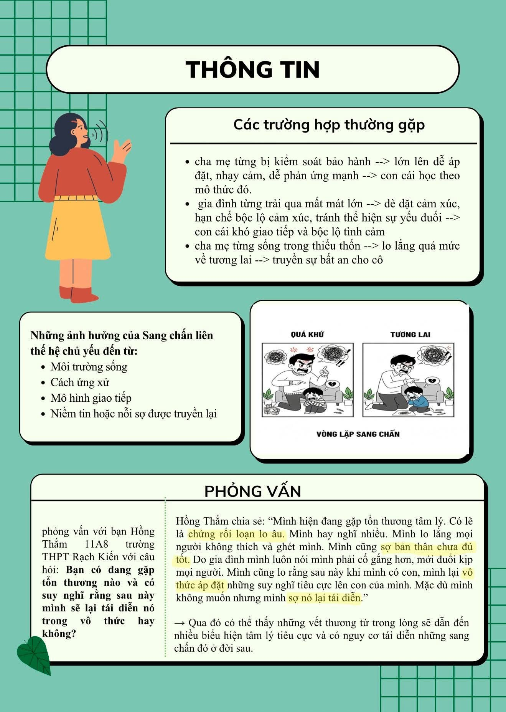

Hoạt động năng nổ và hiệu quả
Cháy hết mình trong các cuộc chơi
Giành những giải thưởng cao nhất
Sáng ngày 22/12/2025, tại Sở Giáo dục và Đào tạo tỉnh Tây Ninh, Cuộc thi Nghiên cứu Khoa học, Kỹ thuật dành cho học sinh trung học năm học 2025 – 2026 đã chính thức diễn ra với sự tham gia của đông đảo học sinh đến từ các trường THPT trên địa bàn tỉnh. Trong không khí nghiêm túc, sôi nổi và giàu tinh thần học thuật, Trường THPT Rạch Kiến vinh dự có 02 dự án của 03 học sinh tiêu biểu đại diện nhà trường tham gia tranh tài ở sân chơi trí tuệ cấp tỉnh.
Cuộc thi Nghiên cứu Khoa học, Kỹ thuật là hoạt động giáo dục có ý nghĩa quan trọng, được tổ chức thường niên nhằm khơi dậy niềm đam mê sáng tạo, tinh thần nghiên cứu khoa học trong học sinh trung học. Thông qua cuộc thi, học sinh có cơ hội vận dụng kiến thức đã học ở nhiều môn học khác nhau như Toán học, Vật lý, Hóa học, Sinh học, Công nghệ, Tin học… để nghiên cứu, đề xuất và xây dựng các giải pháp giải quyết những vấn đề gần gũi với thực tiễn đời sống.
Tham gia Cuộc thi Khoa học, Kỹ thuật cấp tỉnh năm học 2025 – 2026, các học sinh Trường THPT Rạch Kiến đã thể hiện tinh thần nghiêm túc trong quá trình nghiên cứu, từ khâu hình thành ý tưởng, xây dựng đề cương, thực hiện thí nghiệm đến việc hoàn thiện sản phẩm và báo cáo khoa học. Mỗi dự án đều được chuẩn bị công phu, thể hiện rõ khả năng tư duy logic, kỹ năng làm việc nhóm cũng như tinh thần trách nhiệm của các em đối với sản phẩm nghiên cứu của mình.

Không chỉ dừng lại ở việc trình bày ý tưởng, các dự án của học sinh Trường THPT Rạch Kiến còn cho thấy khả năng vận dụng kiến thức liên môn một cách linh hoạt, sáng tạo. Các em đã biết kết hợp giữa lý thuyết và thực tiễn, giữa kiến thức sách vở và những vấn đề đang đặt ra trong cuộc sống hằng ngày, qua đó đề xuất những giải pháp mang tính ứng dụng cao, phù hợp với điều kiện thực tế của địa phương.
Bên cạnh năng lực chuyên môn, các học sinh tham gia cuộc thi còn thể hiện sự tự tin, bản lĩnh và kỹ năng thuyết trình trước hội đồng giám khảo. Trong quá trình bảo vệ dự án, các em đã trả lời thuyết phục các câu hỏi phản biện, thể hiện sự hiểu biết sâu sắc về đề tài nghiên cứu cũng như khả năng phân tích, đánh giá vấn đề một cách khoa học. Đây là những kỹ năng quan trọng, góp phần giúp học sinh hình thành phong cách làm việc chuyên nghiệp và tư duy hội nhập trong tương lai.
Thành công bước đầu của các dự án không chỉ là kết quả của sự nỗ lực, cố gắng không ngừng của các em học sinh mà còn là minh chứng cho sự quan tâm, định hướng đúng đắn của Ban Giám hiệu nhà trường trong việc phát triển phong trào nghiên cứu khoa học trong học sinh. Sự đồng hành, hướng dẫn tận tình của các thầy cô giáo bộ môn đã tạo điều kiện thuận lợi để học sinh mạnh dạn tìm tòi, sáng tạo và phát huy tối đa năng lực của bản thân.
Thông qua Cuộc thi Nghiên cứu Khoa học, Kỹ thuật cấp tỉnh, Trường THPT Rạch Kiến tiếp tục khẳng định vai trò của mình trong việc đổi mới phương pháp dạy học, chú trọng phát triển năng lực và phẩm chất học sinh theo định hướng giáo dục toàn diện. Hoạt động nghiên cứu khoa học không chỉ giúp học sinh mở rộng kiến thức mà còn rèn luyện kỹ năng tư duy phản biện, giải quyết vấn đề và làm việc nhóm – những kỹ năng thiết yếu trong thời đại công nghệ và hội nhập quốc tế.
Cuộc thi cũng là dịp để phong trào nghiên cứu khoa học trong nhà trường được lan tỏa mạnh mẽ hơn, tạo động lực để nhiều học sinh khác mạnh dạn tham gia các hoạt động sáng tạo, nghiên cứu khoa học trong những năm học tiếp theo. Qua đó, góp phần xây dựng môi trường học tập tích cực, năng động, nơi mỗi học sinh đều có cơ hội phát huy năng lực, đam mê và khẳng định giá trị của bản thân.
Với tinh thần học hỏi nghiêm túc, sáng tạo không ngừng và sự chuẩn bị chu đáo, các học sinh Trường THPT Rạch Kiến đã để lại ấn tượng tốt đẹp tại Cuộc thi Nghiên cứu Khoa học, Kỹ thuật dành cho học sinh trung học tỉnh Tây Ninh năm học 2025 – 2026. Dù kết quả cuối cùng ra sao, đây vẫn là dấu mốc đáng nhớ, góp phần khẳng định chất lượng giáo dục của nhà trường và mở ra nhiều cơ hội để học sinh tiếp tục chinh phục những đỉnh cao tri thức trong tương lai.